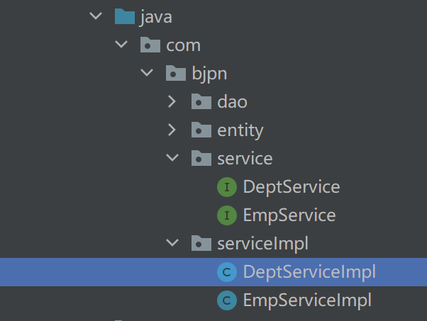
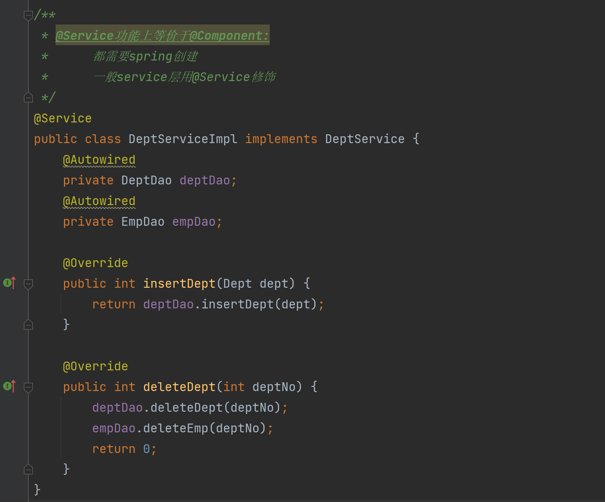

Spring自学笔记md版
Spring框架自学笔记
大连交通大学 信息学院 刘嘉宁 2021-9-14
笔记摘自：bjpowernode 杨震
框架：
-
一组工具类
-
框架是针对某一个技术进行封装，目的降低被封装的技术的使用难度
-
框架这个工具类都是存储在jar包文件
Spring框架(优点)：
Spring：简化java开发，整合了现有的技术框架。是一个轻量级的控制反转和面向切面的框架。
- 开源的免费的容器（框架）
- 轻量级的，非入侵式的框架
- 控制反转（IOC），面向切面编程（AOP）
- 支持事务处理，对框架整合的支持
Spring的七大模块：

Spring容器，使用：
-
Spring容器对象（ApplicationContext）特点：
- 由Spring容器管理的类需要提供一个无参数的构造方法
- 一个bean标签描述的类在Spring容器对象只有一个对应实例对象
- 如果某个类在Spring容器对象需要存在多个实例对象，可以借助于多个bean标签
-
使用Spring容器对象
-
通过xml文件或注解 创建并保存 一个类
-
开发人员可以直接向容器 索要 对象
-
创建maven项目，添加spring-context的依赖
1 2 3 4 5 6 7 8 9<!-- 这里添加的是spring-webmvc的依赖 maven会自动导入spring用到的相关依赖 --> <dependency> <groupId>org.springframework</groupId> <artifactId>spring-webmvc</artifactId> <version>5.3.10</version> </dependency> -
在resources路径下创建spring.xml文件
1 2 3 4 5 6 7 8 9 10<?xml version="1.0" encoding="UTF-8"?> <beans xmlns="http://www.springframework.org/schema/beans" xmlns:xsi="http://www.w3.org/2001/XMLSchema-instance" xmlns:context="http://www.springframework.org/schema/context" xsi:schemaLocation="http://www.springframework.org/schema/beans http://www.springframework.org/schema/beans/spring-beans.xsd http://www.springframework.org/schema/context https://www.springframework.org/schema/context/spring-context.xsd"> <!--通知spring容器，Student类需要由spring负责创建并在开发时对外提供--> <bean class="com.bjpn.Student" id="student"></bean> </beans>-
在spring.xml文件内部声明bean标签
-
class：需要被spring容器创建的类的全限定名
-
id：bean标签的唯一标识
-
name：别名
Spring容器内部有一个Map<id, class>相等于：
map.put(id, new Student)
-
-
测试使用Spring容器对象创建类
1 2 3 4 5 6 7 8 9 10 11 12 13 14 15 16 17 18 19@Test public void appTest1() { /* context:Spring容器对象 ApplicationContext的重要实现类： 1. ClassPathXmlApplicationContext：相对路径获取配置文件 2. FileSystemXmlApplicationContext：绝对路径获取配置文件 */ ApplicationContext context = new ClassPathXmlApplicationContext("spring.xml"); //向容器索要对象 Studnet stu = (Studnet) context.getBean("student"); //通过反射声明类型就可以不用强转 //Studnet stu = context.getBean("student", Studnet.class); //调用类中的方法测试 stu.say(); } -
-
补: 使用JavaConfig实现配置
-
在Config类上声明
@Configuration，它会被spring容器托管创建 -
在Config类上声明
@ComponentScan（xxx.xxxx），可以将包下所有有@Component声明的类绑定为Config类 -
在其方法上声明
@Bean，它的方法名就是id属性、返回值就是class属性 -
使用
AnnotationConfigApplicationContext获取上下文容器对象

Spring框架提供的服务：
- IOC和DI服务：提供对象的创建
- DI服务：提供对象的初始化
- AOP服务：提供动态代理设计模式，简化其使用难度
1. IOC：控制反转服务
IOC是一种控制反转的思想
控制反转就是获得依赖对象的方式反转了：将所有会用到的对象统一保存在spring容器中，使用的时候调用需要的对象即可，避免有写死了依赖对象的代码，大大提高了解耦合性。
IOC的实现方式：
-
通过xml文件或注解 创建并保存 一个类
一、通过xml文件描述：
-
在spring.xml文件中添加bean标签：
1 2<!--通知spring容器，Student类需要由spring负责创建并在开发时对外提供--> <bean class="com.bjpn.Student" id="student"></bean>-
在spring.xml文件内部声明bean标签
-
class：需要被spring容器创建的类信息
-
id：bean标签的唯一标识
-
Spring容器内部有一个Map<id, class>相等于：
map.put(id, new Student)
-
-
测试使用Spring容器对象创建类
1 2 3 4 5 6 7 8 9 10 11 12 13 14 15 16@Test public void appTest1() { /* context:Spring容器对象 ApplicationContext的重要实现类： 1. ClassPathXmlApplicationContext：相对路径获取配置文件 2. FileSystemXmlApplicationContext：绝对路径获取配置文件 */ ApplicationContext context = new ClassPathXmlApplicationContext("spring.xml"); //向容器索要对象 Studnet stu = (Studnet) context.getBean("student"); //调用类中的方法测试 stu.say(); }二、通过Annotation注解描述：
- @Component声明要被spring创建实例对象的类
- ==必须存在无参构造方法==
-
-
默认id：小驼峰类名
-
手动设置id：
@Component(value="id名")
-
在类上方声明@Component注解

-
在spring配置文件中添加component-scan标签，并绑定到包
1<context:component-scan base-package="org.example"></context:component-scan>
-

2. DI：依赖注入服务
依赖注入服务：IOC的一个扩展，负责对象中属性的初始化
- 依赖：bean对象的创建依赖于容器
- 注入：bean对象中的所有属性由容器来注入
DI服务分类：
- 基本属性初始化
- 引用类型属性初始化
- 有参构造方法属性初始化
DI的实现方式：
-
通过xml文件或注解 初始化 一个类
一、通过xml文件描述：
- 在spring.xml文件的bean标签中添加：
- property标签：通过set方法为实例对象进行赋值
- name：属性名
- value：基本属性值
- ref：引用类型属性的bean标签id
1 2 3 4 5 6 7 8 9 10 11 12 13 14 15 16 17 18 19 20 21 22 23 24 25 26 27 28 29 30 31 32 33 34 35 36 37 38 39 40 41 42 43 44 45 46 47 48 49 50 51 52 53 54 55<bean class="java.util.ArrayList" id="arrayList"></bean> <bean class="org.example.App" id="app2"> <!--通过set方法为实例对象进行赋值--> <!--普通类型注入--> <property name="name" value="毛桑"></property> <!--引用类型注入--> <property name="list" ref="arrayList"></property> <!--数组的注入--> <property name="array"> <array> <value>1</value> <value>2</value> <value>3</value> <value>4</value> </array> </property> <!--List集合的注入--> <property name="arraylist"> <list> <value>听歌</value> <value>看电影</value> <value>吹牛逼</value> </list> </property> <!--Map集合的注入--> <property name="map"> <map> <entry key="" value=""> <entry key="" value=""> <entry key="" value=""> </map> </property> <!--Set集合的注入--> <property name="set"> <set> <value>听歌</value> <value>看电影</value> <value>吹牛逼</value> </set> </property> <!--Null空值的注入--> <property name="nullValue"> <null/> </property> <!--properties文件的注入--> <property> <props> <prop key="username">root</prop> <prop key="password">129807</prop> </props> </property> </bean> <!-- p 命名空间的使用--> <bean class="org.example.App" id="app4" p:name="毛嘉">- constructor-arg标签：通过有参构造方法为实例对象进行赋值
- name：属性名
- value：基本属性值
- ref：引用类型属性的bean标签id
1 2 3 4 5 6 7 8 9 10 11 12 13 14 15 16<bean class="java.util.ArrayList" id="arrayList"></bean> <bean class="org.example.App" id="app3"> <!--通过有参构造方法为实例对象进行赋值--> <!--通过形参名赋值--> <constructor-arg name="name" value="毛桑"></constructor-arg> <constructor-arg name="list" ref="arrayList"></constructor-arg> <!--通过下标赋值--> <constructor-arg index="0" value="毛桑"></constructor-arg> <constructor-arg index="1" ref="arrayList"></constructor-arg> <!--通过下标赋值（不建议使用，如果有相同类型的参数就GG）--> <constructor-arg type="java.lang.String" value="毛桑"></constructor-arg> <constructor-arg type="java.util.ArrayList" ref="arrayList"></constructor-arg> </bean> <!-- c 命名空间的使用--> <bean class="org.example.App" id="app4" c:name="毛嘉"></bean>- xml的自动装配
- 必须保证容器中只有一个类型匹配的对象
- byName：自动在容器上下文中找set方法对应的小驼峰bean id
- bytype：自动在容器上下文中找类型匹配的bean
1 2 3 4 5 6<bean class="java.util.ArrayList" id="arrayList"></bean> <bean class="org.example.App" id="app6" autowire="byName"> <!--通过有参构造方法为实例对象进行赋值--> <constructor-arg name="name" value="毛桑"></constructor-arg> <!--<constructor-arg name="list" ref="arrayList"></constructor-arg>--> </bean>二、通过Annotation注解描述：
- 使用
@Value对基本属性进行初始化
-
也可以声明在set方法上
-
==出现@Value的类必须由spring容器对象创建==

- 使用
@Autowired对引用数据类型初始化（自动装配）
-
要求spring容器提供类型匹配的对象初始化，必须保证容器中只有一个类型匹配的对象
-
也可以声明在set方法上
-
==出现@Autowired的类必须由spring容器对象创建==

-
借助@Qualifier提供对象id指定初始化对象


Bean的作用域：
- singleton单例模式（默认）
- prototype原型模式：每次从容器getBean时都会产生一个新的对象
|
|
3. AOP：面向切面
面向切面(aspect)：使用动态代理简化JDK代理设计模式开发难度
- 目标对象（target）：本次要帮助的某个接口下的某个实现类的实例对象, 目标对象并不会直接出现在程序。所有对于目标对象请求，都由其对应的代理对象进行接收。
- 切面（aspect）： 切面就是一个类。一个需要在某个接口下所有实现类中指定方法下统一新增的方法
- 连接点（joinPoint）：接口下需要与新增功能关联的方法。比如 service方法
- 切入点（pointCut）： 定位地址，用于指向连接点位置
- 通知（advice）：【切面】与【连接点】的调用顺序
AOP服务中通知分类：
- 前置通知： 先执行[切面] 再执行[连接点] 【@Before】
- 后置通知: 先执行[连接点] 再执行[切面] 【@AfterReturning】
- 环绕通知： 先执行[切面] 再执行[连接点] 最后再执行[切面]【@Around】
- 异常通知： 只有在[连接点]运行时抛出了异常，才会执行[切面]【@AfterThrowing】
- 最终通知: 无论[连接点]是否执行成功，最终都要执行[切面] try{}finally{} 【@After】
在spring框架中使用动态代理：
一、 通过xml文件方式
-
添加spring动态代理aspects依赖
1 2 3 4 5 6<!-- spring-aspects --> <dependency> <groupId>org.springframework</groupId> <artifactId>spring-aspects</artifactId> <version>5.3.9</version> </dependency>
-
创建目标接口、目标接口实现类
-
创建切面类
-
完成[切面]、[通知]
-
创建目标对象接口、实现类、实现类功能
-
创建切面类，写切面方法

-
-
在spring.xml中:
- 创建代理对象，切面对象
- 配置aop
1 2 3 4 5 6 7 8 9 10 11 12 13 14<!--使用bean标签要求spring容器创建代理对象和切面对象--> <bean class="com.bjpn.serviceImpl.DeptServiceImpl" id="deptService"/> <bean class="com.bjpn.aspect.MyAspect" id="myAspect"/> <!--aop配置标签--> <aop:config> <!--声明切入点（pointCut），绑定连接点（joinPoint）的具体实现方法--> <aop:pointcut id="myPointCut" expression="execution(public void com.bjpn.service.BaseService.service())"/> <!--声明切面，绑定切面对象--> <aop:aspect ref="myAspect"> <!--声明通知类型，绑定切面中的增强方法，绑定切入点--> <aop:before method="newMethod" pointcut-ref="myPointCut"/> </aop:aspect> </aop:config> -
测试使用
-
问：为什么这里要上转型使用接口创建实例对象？
-
答：因为AOP动态代理默认使用的是JDK的动态代理，JDK的动态代理需要类有对应的接口，且必须使用接口上转型
-
补：在IOC中使用spring容器创建实现了接口的对象时，也会自动使用JDK动态代理，需要上转型。如若是使用spring容器创建没有实现接口的对象时，使用的是cglib动态代理，不需要上转型使用。

-

二、 通过注解方式
-
添加spring动态代理aspects依赖
1 2 3 4 5 6<!-- spring-aspects --> <dependency> <groupId>org.springframework</groupId> <artifactId>spring-aspects</artifactId> <version>5.3.9</version> </dependency>
-
创建目标接口、目标接口实现类 ==使用Spring容器创建==
-
创建切面类 ==使用Spring容器创建==
-
完成[切面]、[通知]
- 创建目标对象接口、实现类、实现类功能
- 创建切面类，写切面方法
newMethod，声明通知方式的注解@Before
1 2 3 4 5 6 7 8 9 10 11 12 13 14 15 16 17 18 19 20 21 22 23 24 25/** * 加@Component，切面类需要由spring创建 * 加@Aspect，表明此类为切面类（不用手动实现InvocationHandler接口） */ @Component @Aspect //@EnableAspectJAutoProxy(proxyTargetClass = true) //加入这行可替代xml文件中的<aop:aspectj-autoproxy/> public class MyAspect { /** * @ Before()，前置注解：先执行【切面】再执行【连接点】 * 设置pointCut，说明与哪些连接点关联 */ @Before(value = "execution(public void com.bjpn.service.BaseService.service())") public void newMethod(){ System.out.println("service开始运行的时间: "+new Date()); } @Around(value = "execution(* * com.bjpn.service.BaseService.*") public void newMethod2(ProceedingJoinPoint jp){ System.out.println("service开始运行的时间: "+new Date()); //执行方法 jp.proceed(); System.out.println("service结束运行的时间: "+new Date()); } } -
在spring.xml中: 通知Spring容器对象在创建代理对象时关联切面类对象和代理对象
1 2 3 4 5 6 7<!--声明创建【目标对象】和【代理对象】--> <context:component-scan base-package="com.bjpn"/> <!--通知spring容器将切面类对象和代理对象关联--> <aop:aspectj-autoproxy /> <!--可以手动设置为cglib代理模式，不需要接口上转型--> <!--<aop:aspectj-autoproxy proxy-target-class="true"/>--> -
测试使用

使用xml文件和注解的区别
-
基于XML文件索要服务：
-
会增加项目的容积
-
相对灵活。可以要求Spring容器对象对某一个类进行多次对象创建
-
-
基于Annotation注解索要服务：
- 有效减少项目的容积
- 由注解管理的类只能在Spring容器对象拥有一个实例对象
其他常用方法
-
在spring.xml中可以导入包含其他spring.xml的内容：
import resource="ApplicationContexxt.xml" -
context.getBeanDefinitionCount();获取Spring容器中对象的数量 -
context.getBeanDefinitionNames();获取Spring容器中所有对象的id -
在AOP中
String methodName = targetMethod.getSignature().getName();获取当前关联方法的名称

Spring框架集成MyBatis
- MyBatis提供DAO代理服务
- Spring容器负责SqlSessionFactory、SqlSession对象、Dao代理对象的创建和初始化
在Spring中使用Mybatis开发：
一、
- 添加依赖
- mysql-jdbc的依赖，负责：Connection / PreparedStatement / ResultSet / Driver
- mybatis的依赖，负责：SqlSessionFactoryBuilder / Configuration / SqlSessionFactory / SqlSession
- mybatis-spring的依赖，负责：易于 Spring 创建 SqlSessionFactory 实现类 / SqlSession 实现类
- druid的依赖，负责：Connection （优化数据库连接池使用，来自阿里巴巴）
- spring-context的依赖，负责：ClassPathXmlApplication
- spring-jdbc的依赖，负责：spring 和 jdbc 的协调管理
|
|
- 创建实体类、DAO接口、mapper文件、mybatis-config文件
- 最好保证mapper文件名和DAO类名一样
- 最好保证mapper文件和dao类在同一包下
- mapper文件的namespace必须是对应DAO接口全限定名
- mapper文件中SQL语句的ID必须对应DAO接口的方法名

- 在mybatis-config.xml只需设置别名和设置即可
- 在spring.xml中:
- 使用Spring创建【DruidDataSource】数据库连接池管理对象
- 使用Spring创建【SqlSessionFactory】对象，通过dataSource指定【Druid】对象
- 使用Spring创建【MapperScannerConfigurer】对象，通过【SqlSessionFactory】对象创建【Sqlsession】对象，创建【DAO接口实现类】对象，使用时索要即可
|
|
-
测试使用


实现事务管理
- 使用TransactionManager事务管理类的实现类：DataSourceTransactionManager
- Spring容器使用AOP服务将TransactionManager作为切面类与连接点（service方法）进行绑定
在Spring中使用Mybatis实现事务管理：
一、通过XML方法：
-
添加依赖
1 2 3 4 5 6 7 8 9 10 11 12 13<!--事务管理依赖--> <dependency> <groupId>org.springframework</groupId> <artifactId>spring-tx</artifactId> <version>4.3.16.RELEASE</version> </dependency> <!--动态代理的依赖--> <dependency> <groupId>org.springframework</groupId> <artifactId>spring-aspects</artifactId> <version>4.3.16.RELEASE</version> </dependency> -
创建mybatis运行环境，service接口，编写接口实现类
  -
在spring.xml中添加
1 2 3 4 5 6 7 8 9 10 11 12 13 14 15 16 17 18 19 20 21 22 23 24 25<!--声明事务管理器--> <bean class="org.springframework.jdbc.datasource.DataSourceTransactionManager" id="transactionManager"> <!--指定数据库连接池--> <property name="dataSource" ref="dataSource"/> </bean> <!--通知spring容器对象哪个是提供事务服务的对象 事务管理器--> <tx:advice transaction-manager="transactionManager" id="transactionInterceptor"> <tx:attributes> <!--指定方法的事务属性 name:方法名称 isolation：隔离级别 propagation：传播行为 rollback-for：回滚的异常类， 对于自定义的异常要使用全限定名称，系统的异常类可以名称 --> <tx:method name="save*" isolation="DEFAULT" propagation="REQUIRED" rollback-for="com.bjpn.crm.exception.AjaxRequestException, com.bjpn.crm.exception.TraditionRequestException" /> </tx:attributes> </tx:advice> <!--通知spring容器对象, 目标方法，位置--> <aop:config> <!--绑定切入点：任意返回值类型，service包下所有接口下的所有类，所有有无参数的类--> <aop:pointcut id="myPointCut" expression="execution(* com.bjpn.service.*.*(..))"/> <!--绑定容器对象和切入点--> <aop:advisor advice-ref="transactionInterceptor" pointcut-ref="myPointCut"/> </aop:config> -
测试使用


二、通过注解方式：
-
添加依赖
1 2 3 4 5 6<!--springframework事务管理--> <dependency> <groupId>org.springframework</groupId> <artifactId>spring-tx</artifactId> <version>4.3.16.RELEASE</version> </dependency> -
在需要使用事务的连接点（service方法）上声明
@Transactional注解- 注解向spring容器索要transactionalManager
- 由transactionalManager扮演切面类，管理事务
-
在spring.xml中
1 2 3 4 5 6 7<!--声明事务管理器--> <bean class="org.springframework.jdbc.datasource.DataSourceTransactionManager" id="transactionManager"> <!--指定上方声明好的数据库连接池--> <property name="dataSource" ref="dataSource"/> </bean> <!--注解驱动：为所有声明了@Transactional的方法绑定提供事务管理服务--> <tx:annotation-driven transaction-manager="transactionManager"/> -
测试使用


使用XMl文件与注解的区别
- 使用注解的方式需要在每一个业务方法上都添加注解（重复性开发）
- 推荐使用xml，一次编写让所有业务加上事务
在WEB项目中使用spring
-
不能用spring容器来创建servler对象
-
使用spring容器创建service对象


灵活运用监听器
- 在WEB项目中使用ContextLoaderListener监听器将spring容器对象存在全局作用域对象中
-
添加依赖
1 2 3 4 5 6<!--spring-web spring提供的监听器依赖--> <dependency> <groupId>org.springframework</groupId> <artifactId>spring-web</artifactId> <version>5.3.9</version> </dependency> -
在web.xml中
标签中指定spring.xml的位置，ContextLoaderListener就按照这个文件创建spring容器 1 2 3 4 5<!--指定spring.xml文件位置，确保监听器读取的不是默认的web-inf下的applicationContext.xml文件--> <context-param> <param-name>contextConfigLocation</param-name> <param-value>classpath:spring.xml</param-value> </context-param> -
让监听器同时继承ContextLoaderListener类
1 2 3 4 5 6 7 8 9 10 11 12 13 14 15public class LoaderListener extends ContextLoaderListener implements ServletContextListener{ /** * initWebApplicationContext方法：如果全局作用域对象中不存在spring容器对象，那么就创建它 */ @Override public WebApplicationContext initWebApplicationContext(ServletContext servletContext) { return super.initWebApplicationContext(servletContext); } @Override public void contextInitialized(ServletContextEvent sce) { initWebApplicationContext(sce.getServletContext()); } } -
在需要用到spring容器的位置（Servlet 控制器）通过全局作用域对象获取
1ApplicationContext context = (ApplicationContext) req.getServletContext().getAttribute(WebApplicationContext.ROOT_WEB_APPLICATION_CONTEXT_ATTRIBUTE);
遇到的问题
-
在jsp文件中无法使用el表达式
-
在page指令中添加
isELIgnored="false"
-